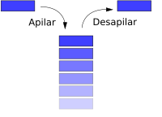
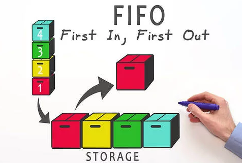
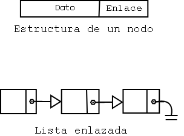
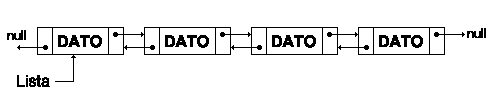

Las estructuras de datos son formas específicas de organizar y almacenar datos para que puedan ser utilizados de manera eficiente. Las estructuras de datos adecuadas pueden mejorar la eficiencia del software, haciéndolo más rápido y permitiendo un acceso y manipulación de datos más fácil y seguro.
Uso
Son esenciales en la programación para manejar datos de diferentes tipos, como listas de elementos, filas de espera, y pilas de tareas. Usadas en aplicaciones, bases de datos, sistemas operativos y algoritmos, las estructuras de datos ayudan a resolver problemas de almacenamiento y acceso eficiente.
Ventajas
Facilitan la gestión y organización de grandes cantidades de datos.
Mejoran la eficiencia en la ejecución de programas y algoritmos.
Desventajas
Requieren conocimientos específicos para implementarse correctamente.
Pueden incrementar la complejidad del código.
2. Pilas (Stacks)
Las pilas son estructuras de datos de tipo LIFO (Last In, First Out), donde el último elemento en entrar es el primero en salir. Imagina una pila de platos: el último plato que colocas es el primero que puedes retirar.

Representación simplificada de una pila
Uso
Deshacer acciones: Ideal para aplicaciones como editores de texto, donde las operaciones previas se deshacen en orden inverso.
Evaluación de expresiones: Utilizadas en compiladores y calculadoras para evaluar expresiones matemáticas.
Llamadas de función: Almacenan el orden de las llamadas para gestionar la recursión, ya que el último llamado es el primero en terminar.
Operaciones
Las operaciones fundamentales en una pila son:
Push (Empujar): Agregar un elemento en la parte superior de la pila.
Pop (Sacar): Eliminar el elemento superior de la pila.
Top/Peek (Tope/Vistazo): Observar el elemento superior sin eliminarlo.
isEmpty (Está vacía): Verificar si la pila no tiene elementos.
Ventajas
Son muy eficientes para tareas donde se debe procesar o deshacer información en orden inverso.
Estructura simple y fácil de implementar.
Desventajas
El acceso está limitado al último elemento, lo que hace que sea menos adecuada para casos en los que se necesita acceder a elementos en posiciones arbitrarias.
No es adecuada si se requiere acceso aleatorio a elementos.
3. Colas (Queues)
Una cola es una estructura de datos donde el primer elemento en entrar es el primero en salir (FIFO - First In, First Out). Piensa en una fila en un banco: la primera persona en llegar es la primera en ser atendida.

Representación de una Cola
Uso
Gestión de tareas en sistemas operativos: Para manejar procesos en sistemas multitarea, asignando los recursos al proceso que lleva más tiempo en espera.
Sistemas de atención: Como en bancos o servicios de atención al cliente, donde el primero en llegar es el primero en ser atendido.
Procesamiento en tiempo real: Útil en sistemas donde se requiere procesar datos en el orden en que llegan, como en redes o transmisiones en vivo.
Operaciones
Las operaciones fundamentales en una cola son:
Enqueue (Encolar): Agregar un elemento al final de la cola.
Dequeue (Desencolar): Eliminar el elemento al frente de la cola.
Front (Frente): Obtener el elemento al frente de la cola sin eliminarlo.
isEmpty (Está vacía): Verificar si la cola está vacía.
size (Tamaño): Obtener el número de elementos en la cola.
Ventajas
Adecuada para procesos donde el orden de llegada es importante.
Útil para gestionar procesos de ejecución secuencial.
Desventajas
Acceso limitado a solo el primer y el último elemento.
No adecuada para operaciones que necesitan acceso aleatorio.
4. Listas
Las listas son estructuras de datos que permiten almacenar elementos en una secuencia ordenada. Pueden ser dinámicas, lo que facilita la adición y eliminación de elementos.
4.1 Listas Simplemente Enlazadas
En una lista simplemente enlazada, cada nodo contiene un valor y un puntero que indica la ubicación del siguiente nodo en la lista. Este tipo de lista es unidireccional, por lo que solo permite avanzar hacia adelante. La estructura suele tener:
Un nodo inicial o cabeza (head) que marca el comienzo de la lista.
Nodos intermedios que enlazan uno al siguiente.
El último nodo apunta a un valor nulo (o null), indicando el final de la lista.

Representación de una lista simplemente enlazada
Uso
Se usa cuando se necesita un acceso secuencial y agregar o eliminar elementos es frecuente. Ejemplos incluyen listas de reproducción y sistemas de administración de memoria.
Ventajas
Simplicidad y menor consumo de memoria (solo un puntero por nodo).
Ideal para implementar pilas y colas, donde se necesita agregar o eliminar elementos en un solo extremo.
Desventajas
No permite regresar al nodo anterior sin recorrer la lista desde el inicio.
Inserciones y eliminaciones en la mitad de la lista son menos eficientes.
4.2 Listas Doblemente Enlazadas
Las listas doblemente enlazadas tienen una estructura similar, pero cada nodo contiene dos punteros: uno apunta al nodo siguiente y el otro apunta al nodo anterior. Esta estructura bidireccional permite:
Navegar hacia adelante y hacia atrás.
Tener una cabeza y una cola para optimizar operaciones en ambos extremos.

Representación de una lista doblemente enlazada
Uso
Se usa cuando se necesita un acceso secuencial y agregar o eliminar elementos es frecuente. Ejemplos incluyen listas de reproducción y sistemas de administración de memoria.
Ventajas
Acceso bidireccional, lo que hace que las inserciones y eliminaciones en el medio sean más eficientes.
Útil para implementar estructuras de datos que requieren moverse en ambas direcciones, como en algoritmos que necesitan retroceder en la lista.
Desventajas
Ocupa más memoria por el segundo puntero.
La implementación es un poco más compleja.
5. Conclusiones
Las estructuras de datos son fundamentales para la eficiencia y organización en el desarrollo de software. Cada estructura tiene sus propias ventajas y limitaciones, y la elección correcta depende de los requerimientos específicos de cada aplicación.